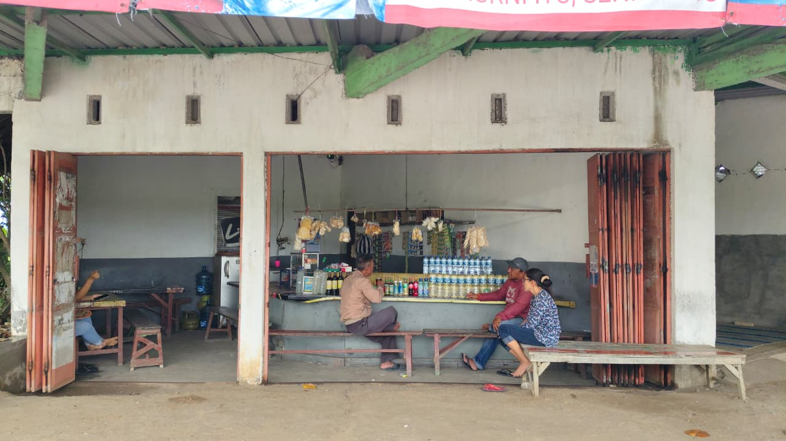

Tentang
Warung Mbak Anis merupakan salah satu tempat makan favorit yang berlokasi di sebelah barat SMKN Kabuh. Warung ini selalu ramai dikunjungi oleh berbagai kalangan, mulai dari siswa, guru, hingga masyarakat sekitar. Letaknya yang strategis membuat Warung Mbak Anis mudah dijangkau, terutama bagi guru dan siswa dari SMKN Kabuh maupun SMK lain di sekitarnya yang ingin menikmati makanan dengan cepat dan praktis. Warung ini juga menjadi solusi alternatif ketika kantin sekolah tutup, sehingga tetap menjadi pilihan utama untuk memenuhi kebutuhan makan dan jajan. Dengan suasana yang sederhana dan nyaman, serta harga yang terjangkau, Warung Mbak Anis cocok untuk semua kalangan.